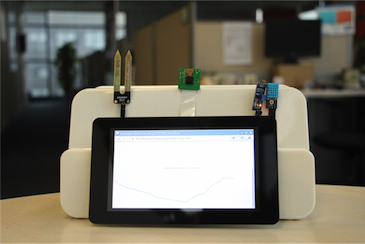
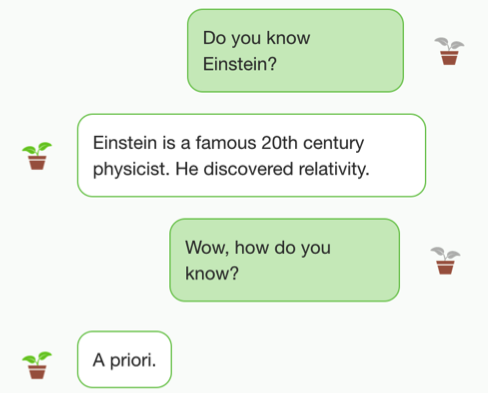
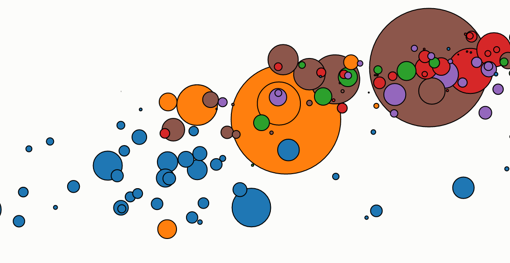
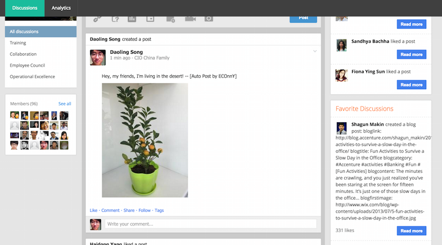

Our Approach
Ecology, reimagined from 5 parts.
1.Cool Hardware

We design a smart “armor” for the plants. Once equipped with the smart "armor" --sensors, the plant can monitor various information from surrounding environment includinglight intensity, soil moisture, air humidity and ambient temperature. Moreover, the "armor” can take photos for our plants regularly and Raspberry Pi inside it will transmit real-time environmental data and plant photos to Ali Cloud platform via wireless router.
2.Top data analyse
The real-time environmental data we collect from sensors will be sent to Ali Cloud platform, the "Data House” which greatly support our scientific management and meticulous caring for the plants. After database importing , data cleaning and analytical modeling, ECOnnY will provide users with a kind reminder, for example, “I’m thirsty! It’s time for watering ” or a piece of scientific advice – “Sunshine is good for me!”…. Users will receive interesting analytical reports weekly, monthly and annually, and we give personalized care to different species of plants. Professional planting guidelines are given by specialists from Chinese Academy of Sciences.

3.AI

Chat with your plants? Now it’s no longer a dream! Our plant is extremely smart! We incorporate a semantic interactive brain library with memory function using artificial intelligence; With this intelligent brain, plant will bring you an amazing chat experience, and let you know her more!
4.Funny data visualization
How will moisture change after you water the soil? How is light intensity changing as time goes by?Linear or curve? We will use interesting data visualization tool to help you find those details you usually overlook.

5.Social network

Plants at ECOnnY will join our social networks as our friends. In your leisure time, our plant can even give you the weather broadcast, real-time news. When the plant feels not good, he will ask you for help in your friend circle. All in all, our plants can behave as humans more or less, make new friends and enjoy posting various topics and photos in social networks together.
We would love to hear from you.
We'd be happy to answer your questions about ECOnnY. Scan the two-dimension code and join our wechat group.